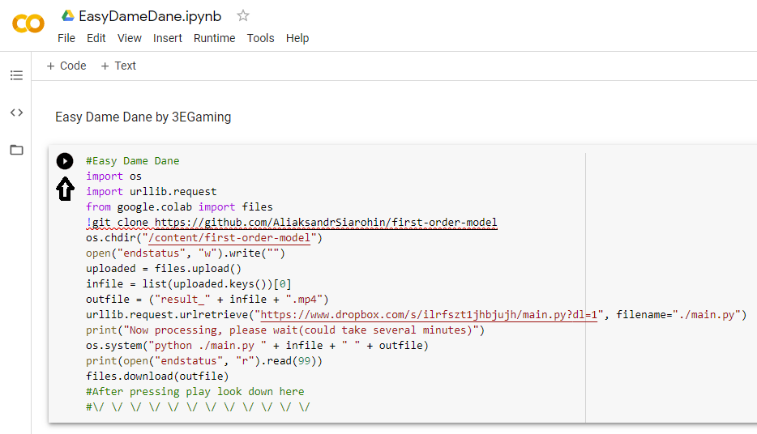
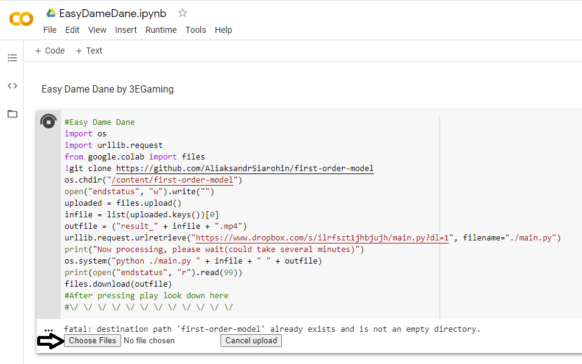
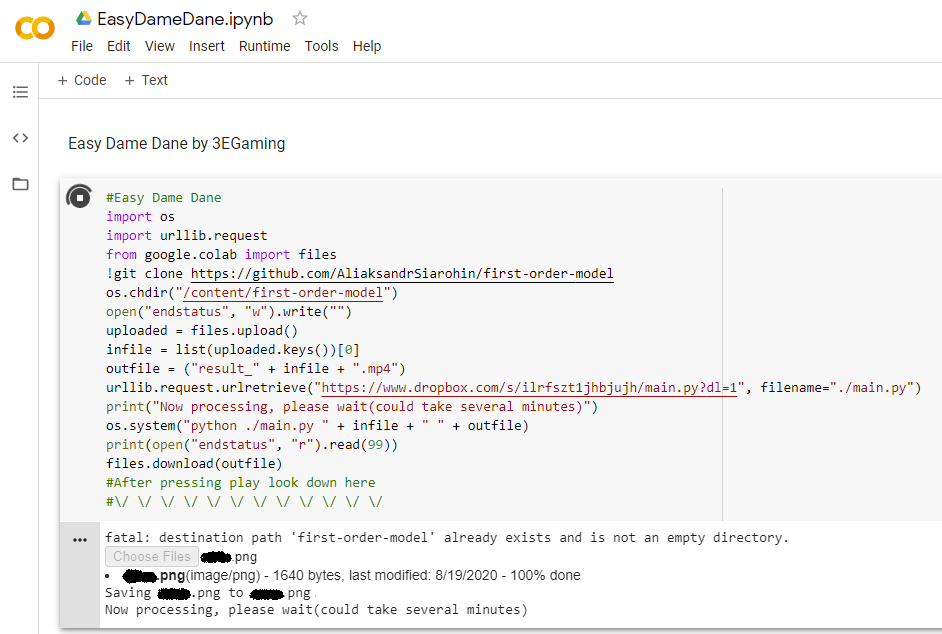

Easy Dame Dane
Easy Dame Dane is a online tool hosted on Google colab to make dame dane/baka mitai memes.
Requirements:
•A 256X256 image of a face
Tutorial:
Then press the play button:

Click the "Choose Files" button:

Wait a few minutes for the tool to process:

Your download sould start a few minutes later!
Credits:
Google colab: hosts the script and provides hardware to run
Baka mitai: the song from the meme